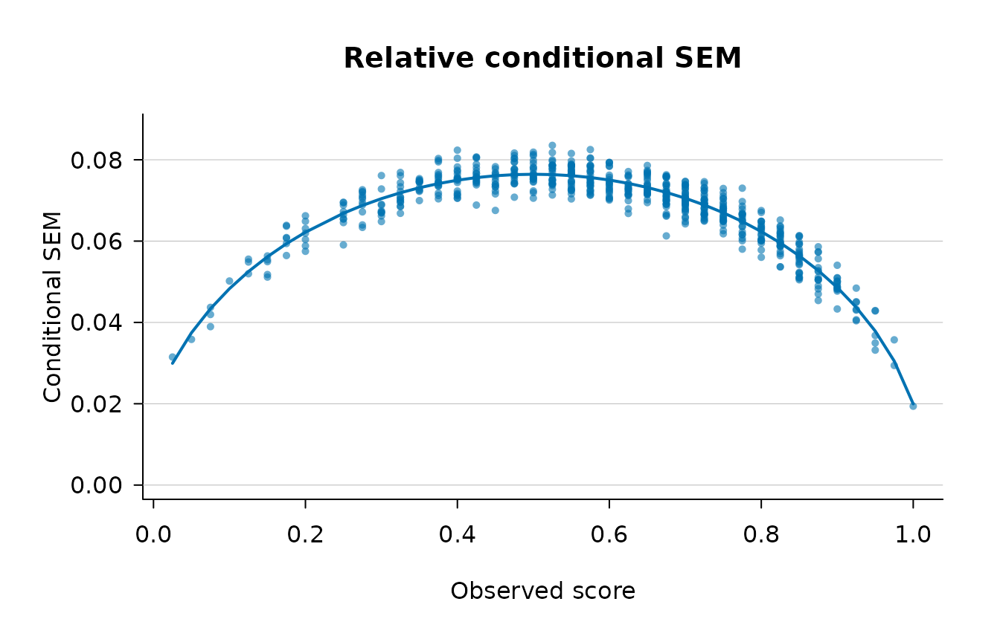

Overview
csemGT estimates conditional standard errors of
measurement (CSEMs) under Generalizability Theory for the univariate
single-facet design in which persons are crossed with items (a
p × i design). Whereas a single overall SEM summarises
measurement precision for a whole test, a conditional SEM describes how
precision varies along the score scale, so that examinees at
different observed-score levels can be assigned different error
bands.
The package implements the absolute-error estimator and the three
relative-error estimators (full, large_a,
uncorrelated) developed by Brennan (1998), together with
optional polynomial smoothing of the conditional error variances across
the score scale and analytical or bootstrap standard errors for the
per-person estimates. csemGT is the R companion to the
Stata gtcsem command and reproduces its numerical
results.
This vignette walks through a minimal analysis. For the full argument
list see ?csem_gt; for replications of published examples
see the Examples vignette.
Installation
# install.packages("remotes")
remotes::install_github("rgempp/csemGT")The mirt package is an optional dependency used only by
some of the worked examples in the Examples vignette; it is not
required for the core functionality shown here.
A minimal example
The package ships with iowa_like, a simulated
3000 × 40 matrix of dichotomously scored item responses. It
is not real test data: it was generated from a Rasch
model whose parameters were calibrated so that its ANOVA-based mean
error variances match the values Brennan (1998, p. 314) reports for the
ITED Vocabulary Test example. See ?iowa_like for the full
provenance.
To keep the vignette fast we draw a reproducible subsample of 600 persons; the analysis is otherwise identical on the full matrix.
library(csemGT)
data(iowa_like)
set.seed(1998)
iowa_sub <- iowa_like[sample(nrow(iowa_like), 600), ]
fit <- csem_gt(iowa_sub, error_type = "relative", method = "full")error_type = "relative" requests the relative (δ-type)
conditional error variance, and method = "full" selects
Brennan’s finite-sample estimator (Equations 35–36), which is the
default. No bootstrap is requested, so standard errors are the
closed-form analytical approximation.
Inspecting the fit: print()
fit
#> ----------------------------------------------------------------
#> Conditional SEMs in Generalizability Theory
#> ----------------------------------------------------------------
#> Design : univariate single-facet (p x i, crossed)
#> Persons (n_p) : 600
#> G-study items : 40
#> D-study items : 40
#> Method : full
#> SE method : analytical
#> Smoothing : quadratic on observed score
#> ANOVA table
#> ----------------------------------------------------------------
#> Effect df SS MS sigma^2
#> ----------------------------------------------------------------
#> p 599 958.459833 1.600100 0.035236
#> i 39 359.446500 9.216577 0.015043
#> pi 23361 4453.553500 0.190641 0.190641
#> D-study error variances and SEMs (n_i' = 40)
#> ----------------------------------------------------------------
#> sigma^2(Delta) = 0.005142 sigma(Delta) = 0.071708 (absolute)
#> sigma^2(delta) = 0.004766 sigma(delta) = 0.069036 (relative)
#> Reliability-like coefficients
#> ----------------------------------------------------------------
#> Generalizability coef. E rho^2 = 0.8809
#> Dependability coef. Phi = 0.8727
#> Quadratic smoothing fits (y = b0 + b1*score + b2*score^2)
#> --------------------------------------------------------------------------
#> Quantity b0 b1 b2 R^2 RMSE
#> --------------------------------------------------------------------------
#> rel_ev_full 0.00036 0.02189 -0.02185 0.8843 0.00041
#> Mean variance of estimator across persons
#> ----------------------------------------------------------------
#> Quantity Analytical
#> ----------------------------------
#> rel_ev_full 6.927086e-05The printed report is organised in blocks. The header records the design and the estimation choices. The ANOVA table gives the person, item, and residual mean squares and the corresponding variance components. The D-study block reports the overall absolute and relative error variances and SEMs: here and , closely reproducing the values Brennan (1998) reports for the ITED Vocabulary Test and confirming that the 600-person subsample preserves the calibrated properties of the full dataset. The reliability-like coefficients (generalizability coefficient and dependability coefficient ) and the quadratic smoothing fit close the report.
Per-score view: summary()
summary(fit)
#> ----------------------------------------------------------------
#> Summary of Conditional SEMs in Generalizability Theory
#> ----------------------------------------------------------------
#> Paradigm : gt
#> Methods : full
#> Error types : relative
#> Persons : 600
#> Items : 40
#> Global statistics
#> ----------------------------------------------------------------
#> Relative SEM sigma(delta) = 0.069036 E rho^2 = 0.8809
#> Absolute SEM sigma(Delta) = 0.071708 Phi = 0.8727
#> CSEM by observed score
#> ----------------------------------------------------------------
#> observed_score group_size cum_freq percentile rel_full
#> 0.025 1 0.0017 0.2 0.03149
#> 0.050 1 0.0033 0.3 0.03583
#> 0.075 3 0.0083 0.8 0.04154
#> 0.100 1 0.0100 1.0 0.05019
#> 0.125 3 0.0150 1.5 0.05413
#> 0.150 5 0.0233 2.3 0.05393
#> 0.175 6 0.0333 3.3 0.06083
#> 0.200 7 0.0450 4.5 0.06183
#> 0.250 9 0.0600 6.0 0.06624
#> 0.275 11 0.0783 7.8 0.06930
#> 0.300 10 0.0950 9.5 0.06864
#> 0.325 14 0.1183 11.8 0.07128
#> 0.350 12 0.1383 13.8 0.07367
#> 0.375 17 0.1667 16.7 0.07514
#> 0.400 19 0.1983 19.8 0.07507
#> 0.425 18 0.2283 22.8 0.07627
#> 0.450 14 0.2517 25.2 0.07443
#> 0.475 19 0.2833 28.3 0.07709
#> 0.500 21 0.3183 31.8 0.07655
#> 0.525 25 0.3600 36.0 0.07675
#> 0.550 30 0.4100 41.0 0.07612
#> 0.575 27 0.4550 45.5 0.07559
#> 0.600 21 0.4900 49.0 0.07443
#> 0.625 20 0.5233 52.3 0.07267
#> 0.650 24 0.5633 56.3 0.07383
#> 0.675 32 0.6167 61.7 0.07136
#> 0.700 37 0.6783 67.8 0.07019
#> 0.725 31 0.7300 73.0 0.06916
#> 0.750 27 0.7750 77.5 0.06728
#> 0.775 21 0.8100 81.0 0.06498
#> 0.800 21 0.8450 84.5 0.06222
#> 0.825 24 0.8850 88.5 0.05991
#> 0.850 25 0.9267 92.7 0.05581
#> 0.875 15 0.9517 95.2 0.05198
#> 0.900 14 0.9750 97.5 0.04919
#> 0.925 7 0.9867 98.7 0.04368
#> 0.950 5 0.9950 99.5 0.03813
#> 0.975 2 0.9983 99.8 0.03257
#> 1.000 1 1.0000 100.0 0.01939summary() adds the conditional SEM tabulated by observed
score, together with each score group’s size, cumulative frequency, and
percentile. Reading down the rel_full column shows the
characteristic concave pattern: the relative CSEM is small at the
extremes of the score scale, rises to a maximum near the middle, and
declines again — the same shape Brennan (1998, Figure 1d) obtained for
the fitted relative SEM of a dichotomously scored test.
Visualising: plot()
plot(fit)
The default plot shows the per-person relative conditional SEM
against observed score, overlaid with the fitted quadratic smooth.
Additional layouts — comparing estimators in a single panel,
side-by-side panels, and analytical or bootstrap confidence bands — are
documented in ?plot.csem and demonstrated in the
Examples vignette.
The fitted object
csem_gt() returns an object of class
"csem". Its main components are the per-person estimates
($estimates), the by-score table ($by_score),
the G-study variance components ($variance_components), the
smoothing fits ($smooth_fits), and the smoother sample
diagnostics ($diagnostics). Convenience accessors are
provided:
str(fit, max.level = 1)
#> List of 15
#> $ estimates :'data.frame': 600 obs. of 13 variables:
#> $ by_score :'data.frame': 39 obs. of 10 variables:
#> $ call : language csem_gt(data = iowa_sub, method = "full", error_type = "relative")
#> $ paradigm : chr "gt"
#> $ methods : chr "full"
#> $ error_types : chr "relative"
#> $ arguments :List of 17
#> $ variance_components:List of 6
#> $ smooth_fits :List of 1
#> $ diagnostics :List of 3
#> $ bootstrap : NULL
#> $ scale_transform : NULL
#> $ n_persons : int 600
#> $ n_items : int 40
#> $ version :Classes 'package_version', 'numeric_version' hidden list of 1
#> - attr(*, "class")= chr [1:2] "csem" "list"
# variance components
coef(fit)
#> $anova_table
#> source df SS MS
#> 1 person 599 958.4598 1.6000999
#> 2 item 39 359.4465 9.2165769
#> 3 person:item 23361 4453.5535 0.1906405
#>
#> $person
#> [1] 0.03523648
#>
#> $item
#> [1] 0.01504323
#>
#> $residual
#> [1] 0.1906405
#>
#> $population_quantities
#> $population_quantities$absolute_error_var
#> [1] 0.005142094
#>
#> $population_quantities$absolute_sem
#> [1] 0.0717084
#>
#> $population_quantities$relative_error_var
#> [1] 0.004766013
#>
#> $population_quantities$relative_sem
#> [1] 0.06903632
#>
#>
#> $reliability_coefficients
#> $reliability_coefficients$erho2
#> [1] 0.8808571
#>
#> $reliability_coefficients$phi
#> [1] 0.8726529
#>
#> $reliability_coefficients$phi_lambda
#> [1] NA
# by-score table as a data frame
head(by_score(fit))
#> observed_score group_size cov_xim csem_var.relative_full
#> 1 0.025 1 0.000232906 0.0009915028
#> 2 0.050 1 0.006277778 0.0012836831
#> 3 0.075 3 0.008618946 0.0017291995
#> 4 0.100 1 0.003452991 0.0025185403
#> 5 0.125 3 0.005138889 0.0029325584
#> 6 0.150 5 0.014850427 0.0029124661
#> csem.relative_full csem_var.analytic.relative_full se.analytic.relative_full
#> 1 0.03148814 0.0002956770 0.01719526
#> 2 0.03582852 0.0002283776 0.01511217
#> 3 0.04153760 0.0001710728 0.01306453
#> 4 0.05018506 0.0001164025 0.01078900
#> 5 0.05413089 0.0001003035 0.01001091
#> 6 0.05392755 0.0001012605 0.01005525
#> ci_low.analytic.relative_full ci_up.analytic.relative_full
#> 1 0.000000000 0.06519023
#> 2 0.006209218 0.06544783
#> 3 0.015931588 0.06714361
#> 4 0.029039007 0.07133111
#> 5 0.034509874 0.07375191
#> 6 0.034219631 0.07363548
#> smoothed_csem.relative_full
#> 1 0.02994060
#> 2 0.03745157
#> 3 0.04337611
#> 4 0.04830156
#> 5 0.05250982
#> 6 0.05616233Next steps
-
?csem_gtdocuments every argument, including bootstrap options, polynomial smoothing, extreme-score handling, and then_items_DD-study generalisation. - The Examples vignette replicates published analyses, including a multi-panel comparison of the relative-error estimators.
- The Stata
gtcsemcommand produces the same estimates for users working in that environment.